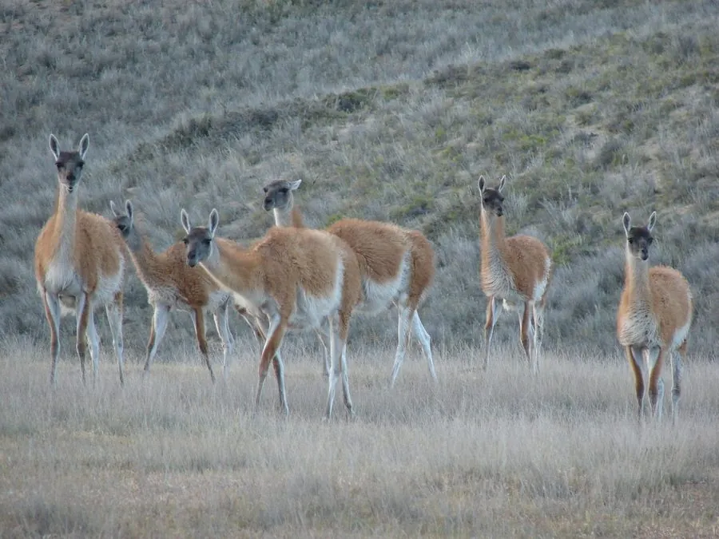

哺乳动物 · 动物界
原驼 Lama guanicoe

南美洲的野生骆驼科动物，体形纤细、毛色棕褐，是羊驼和家养骆马的野生祖先，能在高原和荒漠中长途迁徙。
- 分类
- 门脊索动物门纲哺乳纲目偶蹄目科骆驼科属羊驼属
- 栖息环境
- 南美洲南部的安第斯高原、草原与荒漠
- 地理分布
- 秘鲁、玻利维亚、智利和阿根廷的安第斯山区及巴塔哥尼亚
- 保护级别
- IUCN 无危（LC）
物种志
原驼体长 1.6–2.1 米，肩高 1.0–1.3 米，体重 90–140 kg。它的体形纤细，颈部细长，被毛为棕褐色，腹部和四肢内侧较浅，面部颜色偏灰；耳朵直立而尖，四肢细长，脚掌有肉垫，适合在干旱的开阔地带行走。
原驼分布于南美洲南部的秘鲁、玻利维亚、智利和阿根廷，栖息于安第斯高原、草原和荒漠，是羊驼和家养骆马的野生祖先。它结成雌性与幼仔群体，成年雄性多为独居或组成单身群，以草、灌木和盐生植物为食，能在干旱环境中长途迁徙寻找水源和牧草。原驼多在白天活动，善于奔跑，时速可达 55–65 km/h。雌性妊娠期约 11–12 个月，每胎 1 仔。由于牧场扩张、偷猎和栖息地破碎，原驼在部分地区数量下降，被列为无危。
形态与习性
- 食性草、灌木与盐生植物
- 体长1.6–2.1 m，肩高 1.0–1.3 m
- 体重90–140 kg
- 寿命野外约 20–25 年
- 繁殖妊娠期约 11–12 个月，每胎 1 仔
- 速度时速可达 55–65 km/h
- 社会结构雌性与幼仔结成群体，成年雄性独居或成小群
趣味知识
- 原驼是羊驼和家养骆马的野生祖先。
- 它能在安第斯高原的干旱环境中长途迁徙寻找水源。
- 原驼奔跑时速可达 55–65 km/h，是高原上的快跑者。
- 雌性与幼仔结成群体，成年雄性则独居或成小群。